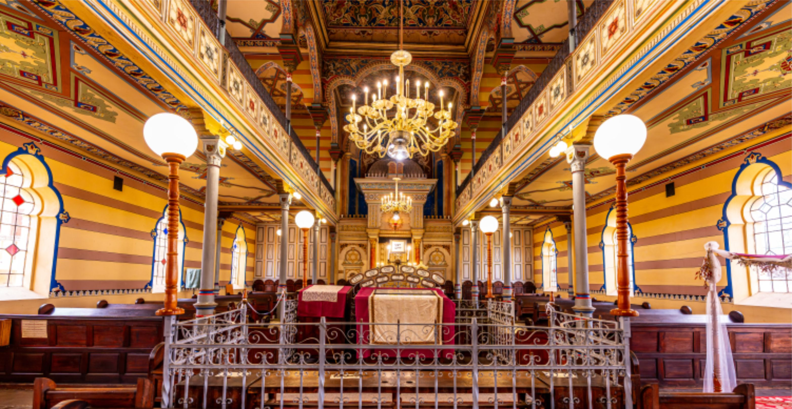
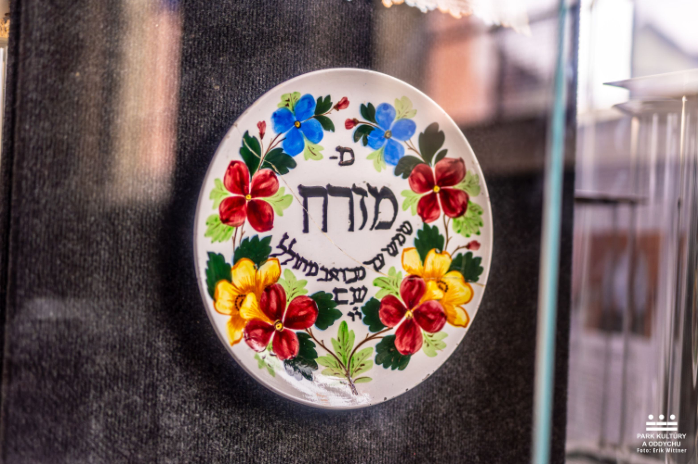
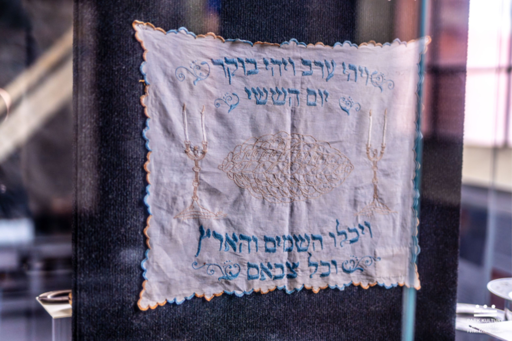
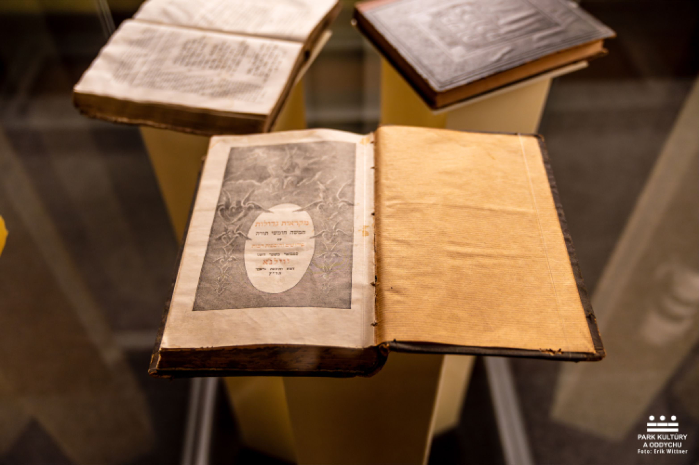

MUZEUM JUDAIK SYNAGÓGA Prešov
Prešovské židovské múzeum vzniklo v r. 1928 ako prvé svojho druhu na Slovensku. Najväčší podiel na jeho budovaní a zhromažďovaní zbierok mal predseda geologickej obce Ing. Eugen Bárkány a dr. Teodor Austerlitz, syn slávneho prešovského rabína. Vďaka nim sa podarilo získať asi 300 predmetov pochádzajúcich zo Slovenska, početné dary zo zahraničia a i. Získali aj zodpovedajúce priestory v tzv. vodnej bašte Kumšt, kde múzeum začalo pôsobiť v r.1931. Počas vojny bola jeho činnosť zastavená a po vojne o jej obnovenie nebol záujem, pričom zbierky začínali chátrať. Preto E. Bárkány sprostredkoval ich uloženie v Štátnom židovskom múzeu v Prahe, kde sa nachádzali až do rozpadu Česko-slovenska. Zbierka sa na Slovensko vrátila v apríli 1993. Už 25. novembra 1993 bola časť zbierky sprístupnená verejnosti ako Stála expozícia judaík inštalovaná v prešovskej ortodoxnej synagóge.



Otváracie hodiny:
Po-Pi: 8:00-13:30 13:30-16:00